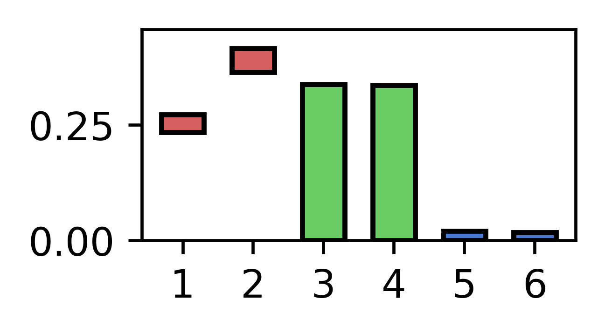

Background
Note
We presented [FRI] at the CIBCB conference. Check out the slides for a short primer into how it works.
Feature selection is the task of finding relevant features used in a machine learning model. Often used for this task are models which produce a sparse subset of all input features by permitting the use of additional features (e.g. Lasso with L1 regularization). But these models are often tuned to filter out redundancies in the input set and produce only an unstable solution especially in the presence of higher dimensional data.
FRI calculates relevance bound values for all input features. These bounds give rise to intervals which we named feature relevance intervals (FRI). A given interval symbolizes the allowed contribution each feature has, when it is allowed to be maximized and minimized independently from the others. This allows us to approximate the global solution instead of relying on the local solutions of the alternatives.

With these we can classify features into three classes:
- Strongly relevant: features which are crucial for model performance
- Weakly relevant: features which are important but can be substituted by another weakly relevant feature
- Irrelevant: features which have no association with the target variable

References
- Göpfert C, Pfannschmidt L, Hammer B: Feature Relevance Bounds for Linear Classification. In: Proceedings of the ESANN. 25th European Symposium on Artificial Neural Networks, Computational Intelligence and Machine Learning; https://pub.uni-bielefeld.de/publication/2908201
- Göpfert C, Pfannschmidt L, Göpfert JP, Hammer B: Interpretation of Linear Classifiers by Means of Feature Relevance Bounds. Neurocomputing. https://pub.uni-bielefeld.de/publication/2915273
- Pfannschmidt L, Jakob J, Biehl M, Tino P, Hammer B: Feature Relevance Bounds for Ordinal Regression . Proceedings of the ESANN. 27th European Symposium on Artificial Neural Networks, Computational Intelligence and Machine Learning; https://pub.uni-bielefeld.de/record/2933893
- Pfannschmidt L, Göpfert C, Neumann U, Heider D, Hammer B: FRI - Feature Relevance Intervals for Interpretable and Interactive Data Exploration. Presented at the 16th IEEE International Conference on Computational Intelligence in Bioinformatics and Computational Biology, Certosa di Pontignano, Siena - Tuscany, Italy. https://ieeexplore.ieee.org/document/8791489